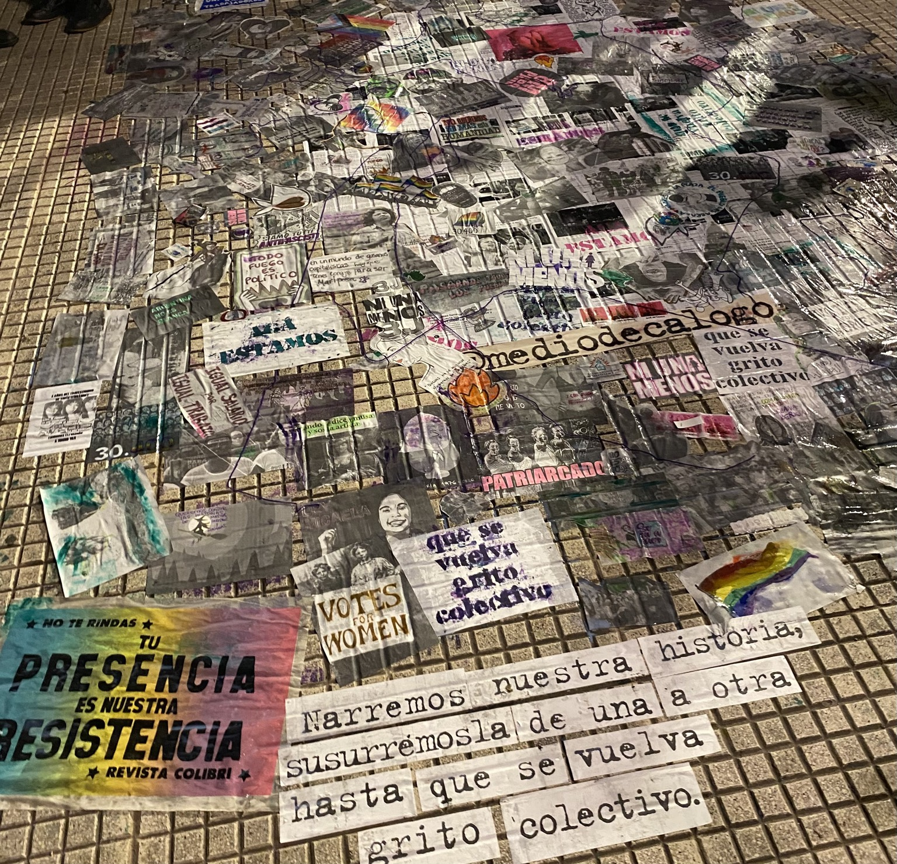

Expresión colectiva

alt="Collage realizado durante una marcha de Ni Una Menos" class="imagen-detalle" >Esta fotografía fue tomada durante una marcha de Ni Una Menos en 2026. La intervención está formada por diferentes imágenes, frases, dibujos y mensajes colocados sobre el espacio público.
A diferencia de los otros elementos de la galería, este trabajo no corresponde a una sola obra, sino a una composición colectiva creada a partir de muchas expresiones diferentes.
Volver a la galería